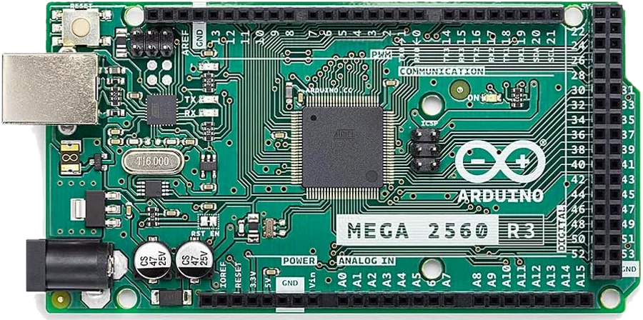
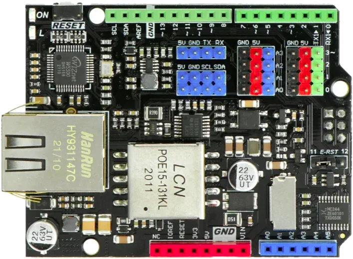
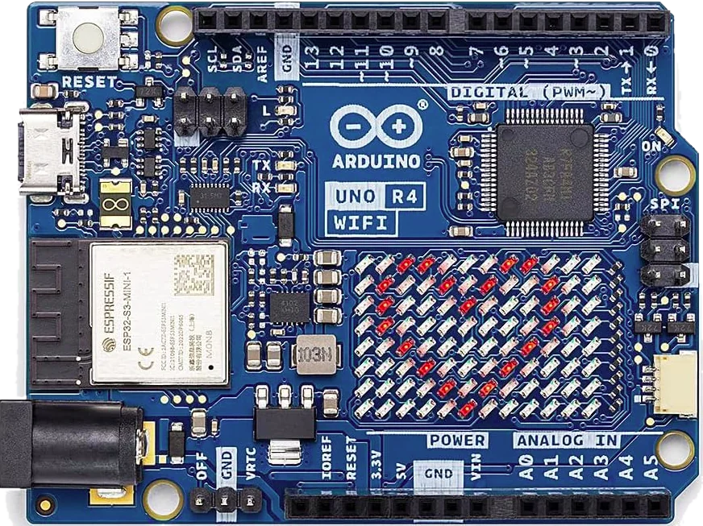

Dalla prima accensione alla lezione in laboratorio: configurazione, linguaggi, esercizi e limiti
appunti pratici per chi insegna automazione ✎



Ideato e realizzato da Daniele Michelotti · daniele.michelotti@gmail.com
github.com/danielemichelotti/ArduLearn versione 2.2 · settembre 2026
Indice
1Che cos'è ArduLearnl'idea, cosa serve, come è fatto
2Le due schedeUNO R4 WiFi e Mega 2560: differenze e pin
3L'app ArduLearn per Windowsle quattro schede dell'app
4Prima configurazione, passo passofirmware, rete, prima apertura, PIN
5La pagina di ArduLearngiro guidato, docente e studenti
6Come ragiona un PLCil ciclo, i segnali, i numeri, il tempo
7Pin e variabiliingressi, uscite, pull-up, indirizzi
8Programmare a blocchi (FBD)logica, uso dell'editor, catalogo dei blocchi
9Programmare in LADDERcontatti, bobine, box, rami
10Programmare in GRAFCETtappe, transizioni, azioni, sicurezze
11Script ST e funzioni Cquando il disegno non basta
12Display, matrice LED e immaginiOLED, LCD, pagine, animazioni
13Moduli: sensori e attuatoritemperatura, distanza, servo, LED...
14Collegamenti elettricischemi e regole di sicurezza
15Salvare e organizzare i programmifile, slot, esempi, bozza
16AggiornamentiUNO R4 WiFi dalla rete, Mega con l'app
17Esercizi guidatisette esercitazioni con soluzioni
18Limiti del prodottocosa non fa e perché
19Problemi e soluzionile domande più frequenti
AAppendicecomandi del monitor seriale, glossario, contatti
Come leggere questo manuale: i riquadri rossi sono attenzioni, quelli blu informazioni utili, i foglietti gialli sono consigli "da collega". Sulle schermate le frecce e le scritte a mano indicano dove cliccare.
1Che cos'è ArduLearn
Un PLC da laboratorio, costruito su una scheda Arduino, che si programma dal browser.
Un PLC (controllore logico programmabile) è il "cervello" delle macchine automatiche: legge pulsanti e sensori, decide cosa fare secondo un programma e comanda lampade, motori, valvole. In azienda si programma con software dedicati e linguaggi standard.
ArduLearn trasforma una scheda Arduino in un piccolo PLC didattico: gli studenti scrivono il programma in una pagina web, con gli stessi linguaggi dell'industria, lo caricano sulla scheda e lo vedono funzionare dal vivo, con i collegamenti che si colorano quando sono attivi.
Per gli studenti non c'è niente da installare: serve solo un browser (Chrome, Edge, Firefox) su un PC della stessa rete della scheda.
Cosa si può insegnare
Logica combinatoria: AND, OR, NOT, XOR con pulsanti e lampade.
Memorie e autoritenuta: il classico marcia/arresto di un motore.
Temporizzatori e contatori: luce delle scale, contapezzi, lampeggi.
Sequenze: semafori, carrelli, macchine a fasi con il GRAFCET.
Grandezze analogiche: potenziometri, temperature, soglie con isteresi, regolazione PWM.
Programmazione testuale (facoltativa): testo strutturato ST e piccole funzioni in C.
Cosa serve
Oggetto
A cosa serve
Una scheda: Arduino UNO R4 WiFi oppure Arduino Mega 2560 con la shield DFRobot Ethernet & PoE (DFR0850)
È il PLC: esegue il programma e comanda ingressi e uscite.
Un PC Windows con l'app ArduLearn.exe
Solo per installare ArduLearn sulla scheda (e ogni tanto per aggiornarla o diagnosticarla). Poi non serve più.
Un cavo USB (USB-C per la UNO R4, USB-B per la Mega)
Per la prima installazione e per alimentare la scheda.
La rete: Wi-Fi della scuola (UNO R4) o cavo di rete (Mega)
I PC degli studenti aprono la pagina della scheda attraverso la rete.
Facoltativi: pulsanti, LED, relè, sensori, display OLED o LCD
Per costruire impianti veri sul banco. Si può anche iniziare senza nulla, con i pulsanti virtuali della pagina.
Come è fatto il sistema
La scheda contiene sia il PLC sia un piccolo sito web: la pagina di ArduLearn. Chi apre l'indirizzo della scheda trova l'editor, scrive o modifica il programma e, se ha il PIN del docente, lo carica. Da quel momento la scheda lavora da sola: anche se si chiude il browser o si spegne il PC, il programma continua a girare, e resta in memoria anche togliendo l'alimentazione.
Tre linguaggi, uno per voltaOgni progetto si scrive in uno dei tre linguaggi: Blocchi (FBD), LADDER (a contatti, stile Siemens TIA Portal) o GRAFCET (sequenze a tappe, con segmenti LADDER). Un programma non si converte da un linguaggio all'altro: si sceglie all'inizio, con Nuovo….
2Le due schede
Il programma e la pagina sono gli stessi: cambiano il collegamento alla rete e il numero di pin.
Arduino UNO R4 WiFi
Si collega al Wi-Fi della scuola, senza schede aggiuntive. Ha a bordo una matrice di 12×8 LED rossi che mostra l'indirizzo della scheda e, se il programma lo chiede, numeri, scritte e icone. Si aggiorna dalla pagina, anche da Internet.
Arduino Mega 2560 + shield Ethernet PoE
Si collega con il cavo di rete (e, con uno switch PoE, prende anche l'alimentazione dal cavo). Ha molti più pin, adatti a impianti grandi. I programmi si conservano sulla microSD della shield.
Confronto rapido
UNO R4 WiFi
Mega 2560 + shield DFR0850
Rete
Wi-Fi 2,4 GHz (rete della scuola o rete propria "ArduLearn-xxxx")
Cavo Ethernet (DHCP, oppure indirizzo automatico 169.254.x.y con cavo diretto al PC)
Pin digitali
D0–D13
D0–D53 (alcuni riservati, vedi sotto)
Ingressi analogici
A0–A5 (A4 e A5 riservati se si usano display o orologio)
A0–A15
Uscite PWM (~)
3, 5, 6, 9, 10, 11
2–13, 44–46
Programma attivo
fino a 7.680 byte, nella memoria interna
fino a 8.192 byte sulla microSD (3.072 byte senza microSD)
Programmi salvati
99 posti nella memoria del modulo Wi-Fi
99 posti sulla microSD (senza microSD: nessuno)
Matrice LED
sì (12×8)
no
Aggiornamenti
dalla pagina, anche da Internet, oppure con l'app
solo con l'app, via USB
Studenti collegati insieme
fino a circa 7 collegamenti contemporanei
una richiesta alla volta: con molti PC la pagina può rallentare
Pin riservati
Alcuni pin sono già usati dalla scheda stessa e nella pagina compaiono bloccati, con il motivo scritto accanto:
Mega: D0 e D1 (collegamento USB), D4 (microSD), D10 (rete), D20 e D21 (display e orologio), D50–D53 (rete e microSD).
UNO R4 WiFi: solo A4 e A5 (display e orologio). D13 è collegato al LED "L" della scheda: comodo per le prime prove.
Un display LCD collegato in parallelo occupa altri 6 pin (quelli scelti nelle Impostazioni).
Quale scegliere? Per iniziare e per le aule con buon Wi-Fi: UNO R4 WiFi. Per banchi con molti ingressi/uscite o reti Wi-Fi difficili: Mega con cavo di rete.
Reti Wi-Fi che non funzionanoLa UNO R4 WiFi non si collega alle reti che chiedono nome utente e password personali (per esempio eduroam o reti "WPA2-Enterprise") né alle reti a 5 GHz. Alcune reti scolastiche inoltre isolano i dispositivi fra loro: i PC non riescono a vedere la scheda. In questi casi chiedi al tecnico una rete dedicata al laboratorio (anche un semplice router), oppure usa la Mega con il cavo.
Tornare a usare la scheda come un Arduino normaleUNO R4 WiFi: ArduLearn sostituisce anche il firmware del modulo Wi-Fi della scheda. Gli sketch normali si caricano ancora dall'IDE di Arduino, ma le librerie Wi-Fi di Arduino (e gli esempi che usano la rete) funzionano solo dopo aver riscritto il firmware originale del modulo Wi-Fi: nell'IDE Arduino apri Strumenti → Aggiornamento firmware (Firmware Updater), scegli la UNO R4 WiFi e installa la versione proposta. Per rimettere ArduLearn basta di nuovo l'app. Mega 2560: basta caricare un qualsiasi sketch dall'IDE; per tornare ad ArduLearn si ricarica il firmware con l'app.
3L'app ArduLearn per Windows
Il programma da installare una sola volta sul PC del docente: prepara le schede, le trova in rete, fa diagnosi.
L'app si scarica da GitHub ed è un singolo file, ArduLearn.exe, che non richiede installazione: basta avviarlo.
Avviso di WindowsAl primo avvio Windows può mostrare "Windows ha protetto il PC", perché l'app non è firmata da un'azienda. Clicca Ulteriori informazioni e poi Esegui comunque. Se il PC è gestito dalla scuola, potrebbe servire il tecnico.
L'app ha quattro schede in alto: Trova le schede, Carica il firmware, Monitor seriale e Guida.
Carica il firmware
La scheda "Carica il firmware" con una UNO R4 WiFi collegata.
1Porta USB: la porta a cui è collegata la scheda (la lista si aggiorna da sola).
2Scheda: si imposta da sola riconoscendo la scheda; va scelta a mano solo per le schede compatibili non originali.
3Firmware incluso: le versioni che l'app installerà.
4Carica il firmware: installa ArduLearn. Per la UNO R4 WiFi prepara prima anche il modulo Wi-Fi (fino a un minuto).
I programmi salvati sulla scheda non vengono cancellati da un nuovo caricamento del firmware. Durante il caricamento non scollegare il cavo e non chiudere l'app.
Trova le schede
Le schede ArduLearn accese nella stessa rete del PC compaiono da sole.
1Apri nel browser: apre la pagina della scheda selezionata (anche con doppio clic).
2Prepara la microSD / Aggiorna la pagina: copia la pagina web sulla microSD della Mega (o nella memoria della UNO R4). Chiede il PIN del docente.
3Cerca di nuovo: ripete subito la ricerca.
Le colonne mostrano nome, indirizzo, tipo di scheda, rete, stato (RUN/STOP), nome del programma e se la pagina è aggiornata o da aggiornare. Se non compare nulla, l'app stessa elenca le cause più probabili (stessa rete, firewall, reti che isolano i dispositivi).
Scrivi il nome di ogni scheda su un'etichetta attaccata alla scheda stessa: ardulearn-2b28, banco3... Così in classe nessuno sbaglia indirizzo.
Monitor seriale
Il monitor seriale, per parlare con la scheda attraverso il cavo USB.
Serve per la diagnosi: scegli la porta (1), premi Connetti (2) e usa i pulsanti a destra. I più utili sono info (nome, indirizzo, programma), run / stop e soprattutto pin reset, che riporta il PIN del docente a 1234. Per la Mega ci sono anche le impostazioni di IP fisso e indirizzo MAC; per la UNO R4 i comandi wifi (stato della rete) e wifi clear (dimentica la rete Wi-Fi salvata). L'elenco completo è in Appendice.
Aprendo il monitor seriale la Mega si riavvia: è normale, il programma riparte da capo dopo pochi secondi.
Guida
La quarta scheda contiene un riassunto di queste istruzioni, sempre a portata di mano anche senza il manuale.